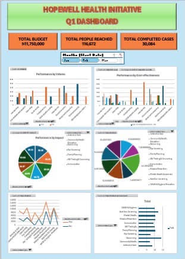
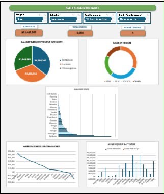
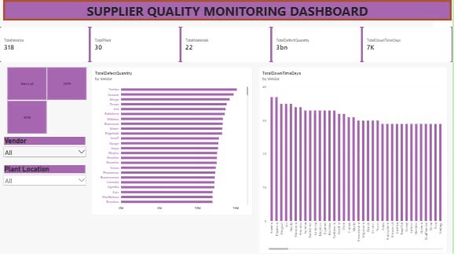
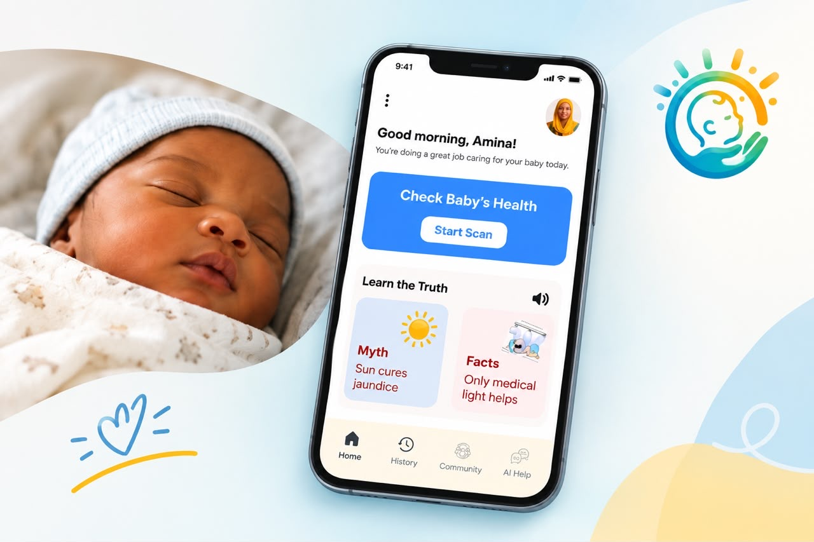
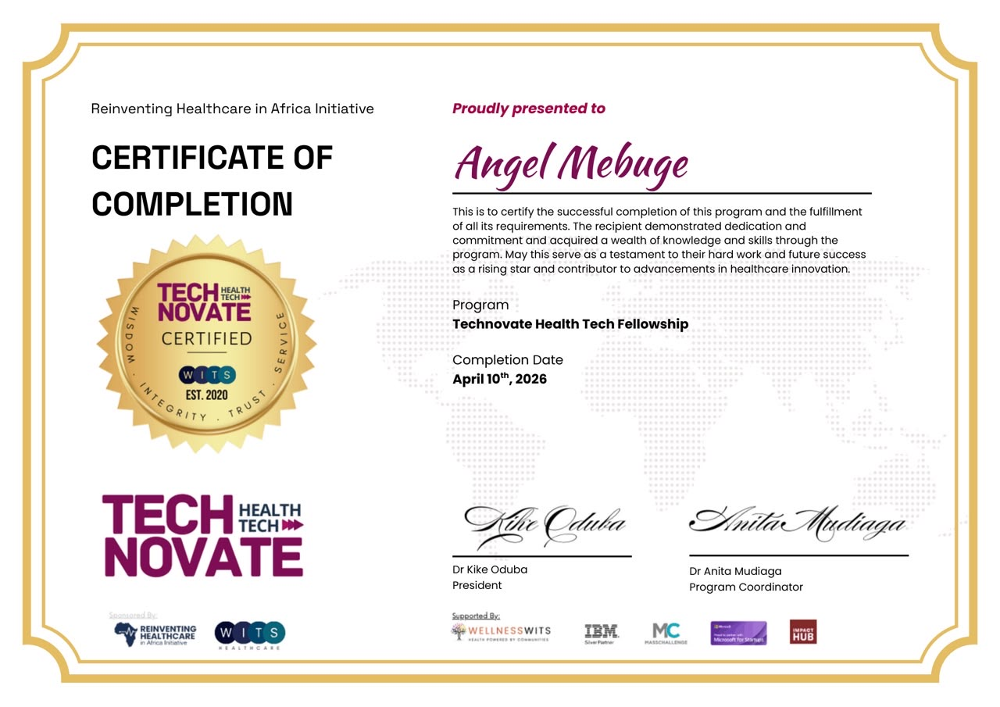
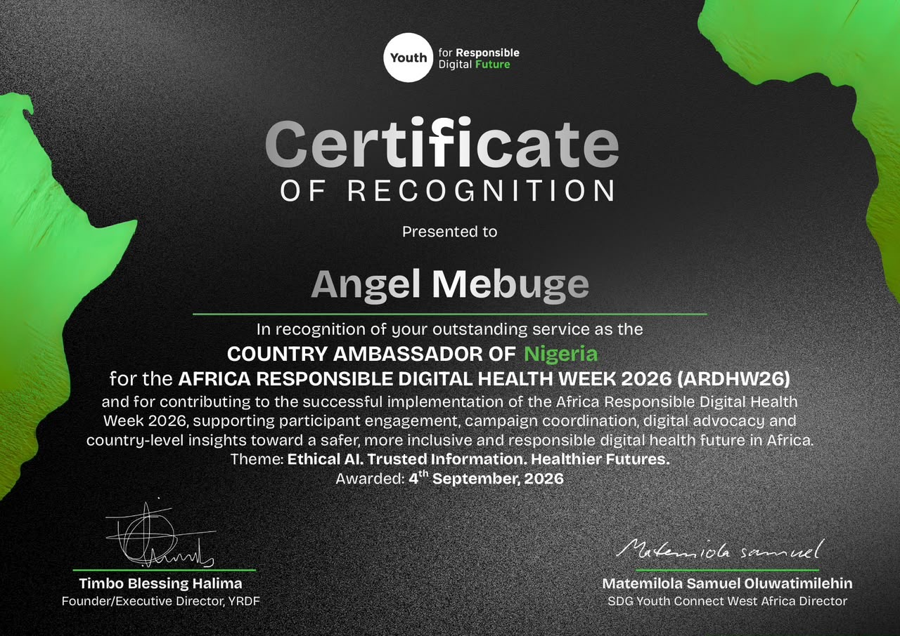
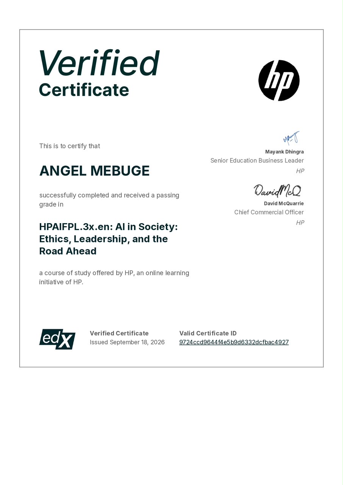
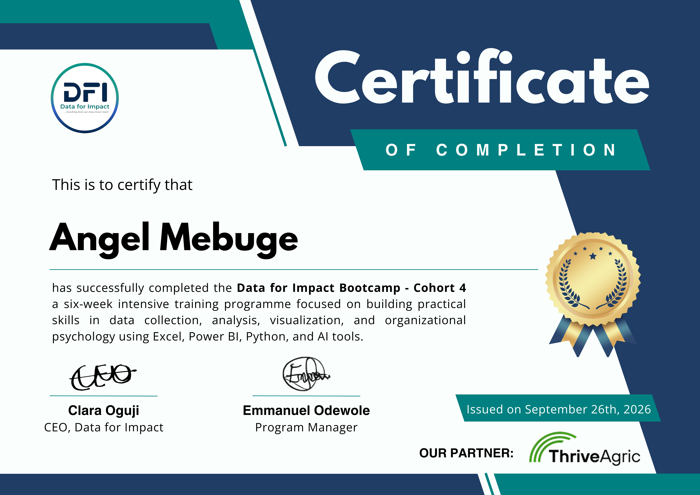

HopeWell Health Initiative
Data Analysis & Recommendations
I’m Angel Mebuge — I work at the intersection of data, healthcare, and digital innovation, with a particular interest in child health. With a background in Anatomy and Public Health, I use data, research, and technology to understand healthcare challenges and explore practical solutions that can improve health outcomes and access to care.
Data should illuminate not just what is happening in health, but who it is happening to.
Angel Mebuge · Digital Health & Data Analytics

Data Analysis & Recommendations

Sales Analytics & Business Insights

Power BI & Operations

Neonatal Jaundice Care Concept
Excel · Power BI · Data Analysis · Data Visualization · Data Cleaning — applied to health datasets to surface meaningful insights.
Researching access to care and health equity for children, with a focus on understanding how technology can be applied thoughtfully to real healthcare challenges.
Digital Health · Health Research · Health Innovation · Responsible AI — exploring practical solutions that respond to the realities of the people they are designed to serve.
Team Leadership · Project Coordination · Communication · Problem Solving — bringing people and evidence together to move things forward.
I have a background in Anatomy and Public Health, with interests spanning data analytics, digital health research, and healthcare innovation. My interest in child health has shaped much of the work I pursue, particularly questions around access to care, health equity, and how technology can be applied thoughtfully to real healthcare challenges.
I’m particularly interested in the responsible use of technology in healthcare — where digital tools complement human expertise and respond to the realities of the people and communities they are designed to serve.
Read more about me →Every project, programme, and piece of research below connects back to the same concern: how do we use data and technology to make health systems work better for the people who need them most?
Data Analytics · Community Health · Team Leadership
A team-based community health data analytics project analysing programme data to identify insights and develop recommendations for programme planning and decision-making.
Tools: Microsoft Excel · PowerPoint
My Role: Team Lead & Data Analyst
Excel · Sales Analytics · Data Analysis
A sales data analysis project focused on understanding sales performance, identifying patterns and trends, and generating business insights and recommendations.
Tools: Microsoft Excel
My Role: Sole Data Analyst
Power BI · Data Analysis · Data Visualization
An individual Power BI project analysing supplier, material, defect, and downtime data to visualize supplier quality performance across manufacturing plants.
Tools: Microsoft Power BI
My Role: Sole Data Analyst & Dashboard Developer
Child Health · Digital Health · Neonatal Care
A digital health concept exploring how a phone-based tool could support the early recognition of potential neonatal jaundice and encourage timely care-seeking, particularly for newborns with darker skin.
Stage: Concept / Pre-product
My Role: Digital Health Project Lead / Creator
I have a background in Anatomy and Public Health, with interests spanning data analytics, digital health research, and healthcare innovation. My interest in child health has shaped much of the work I pursue — particularly questions around access to care, health equity, and how technology can be applied thoughtfully to real healthcare challenges.
I’m interested in using data and research to understand health problems, communicate insights, and explore practical digital solutions. My work includes health data analysis, data visualization, and digital health projects focused on child health and improving access to appropriate care.
I’m particularly interested in the responsible use of technology in healthcare — where digital tools complement human expertise and respond to the realities of the people and communities they are designed to serve.
National Open University of Nigeria
Master of Science · Public Health
Babcock University
Bachelor of Science · Anatomy
Data Analytics: Excel · Power BI · Data Analysis · Data Visualization · Data Cleaning
Digital Health & Research: Digital Health · Health Research · Health Innovation · Responsible AI
Professional & Leadership: Team Leadership · Project Coordination · Communication · Problem Solving
Let’s work together →
View CertificateReinventing Healthcare in Africa Initiative — a fellowship programme exploring health technology innovation across the African continent.
Technovate · Certificate of Completion

View CertificateAfrica Responsible Digital Health Week 2026 — recognised for leadership and advocacy in responsible digital health across Nigeria.
Youth for Responsible Digital Future · Certificate of Recognition
Digital Health & Health Innovation programme focused on early-career development in health technology.
HealthTech Accelerator · Programme

View CertificateCovering the ethical dimensions of artificial intelligence, leadership in the digital age, and frameworks for responsible AI deployment in professional settings.
HP · Professional Certification

View CertificateData Analytics & Health Data programme applying analytical skills to real-world health datasets and public health challenges.
Data for Impact · Cohort 4
Intensive training in Microsoft Excel for data analysis, covering advanced functions, data cleaning, and visualisation techniques applied to health data.
The Klarity Lab · Certificate of Completion
Whether you’re working on a digital health project, looking for a research collaborator, hiring for an internship, or just want to talk about child health data — I’d genuinely love to hear from you. I reply to every message personally.
Nigeria
Open to global opportunities, remote collaboration, fellowships, and internships.
Internships, fellowships, research collaborations, data analytics projects, and early-career opportunities in digital health — particularly those focused on child health or African health systems.
Currently available for project work, research partnerships, and opportunities at the intersection of data, child health, and digital innovation.